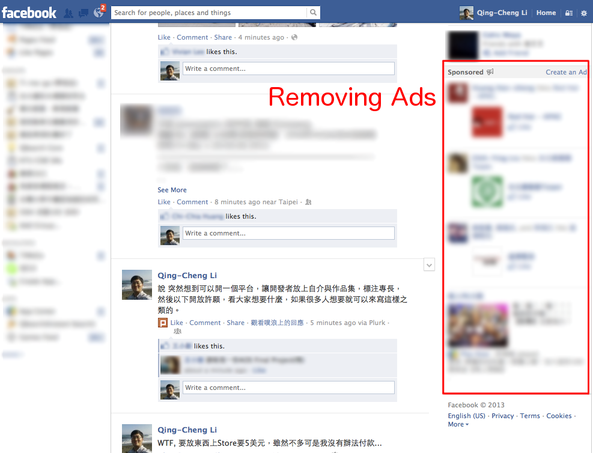
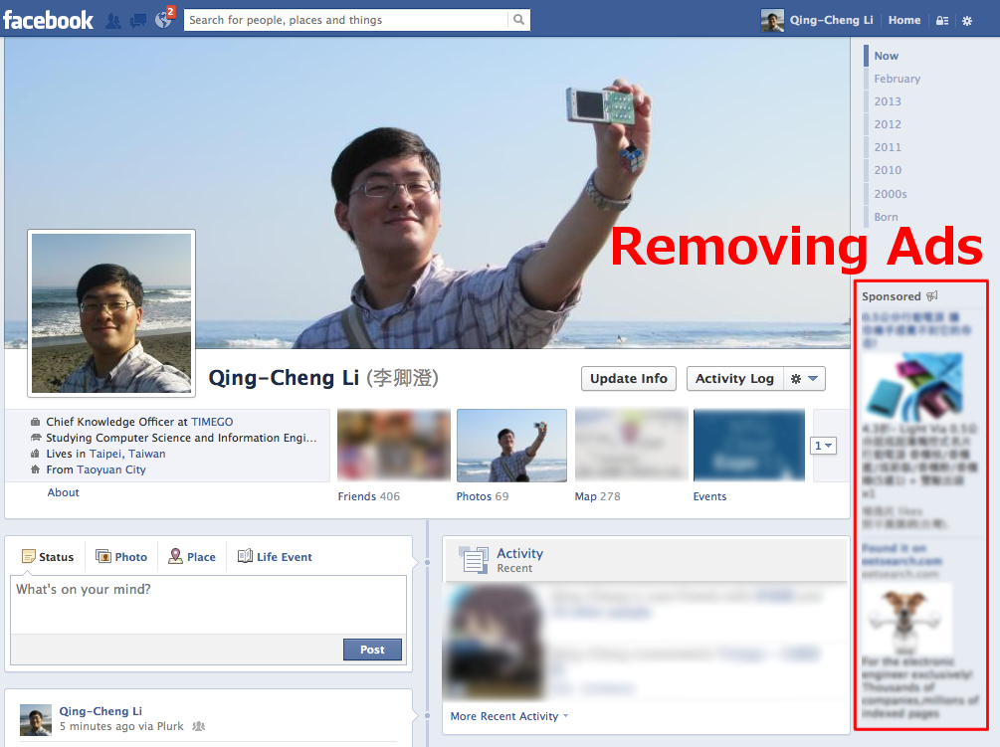
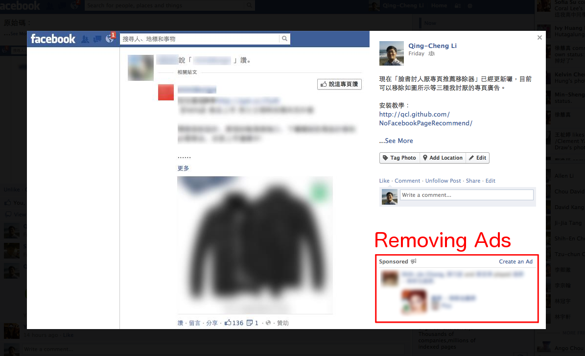

QCLean: Remove Facebook Ads, Suggested Pages & Posts
A extension/add-on that removing ads, suggested pages and posts on facebook news feed for Chrome/Firefox/Safari/Opera/IE users.
移除Facebook廣告、建議貼文與推薦粉絲專頁的瀏覽器附加元件
Download


Features

Remove Suggested Pages
移除「推薦粉絲專頁」

Remove Suggested Posts
移除「建議貼文」

Remove Ads on News Feed Page
Remove Ads on News Feed Page
移除動態旁的廣告New!

Remove Ads on Your Personal Page
Remove Ads on Your Personal Page
移除個人頁面旁的廣告New!

Remove Ads on Photo View
Remove Ads on Photo View
移除相片旁的廣告New!
Handmade Code
男子漢Programmer
純手工，使用男子漢編輯器精工打造程式碼。
真正的男子漢programmer是不會用那些亂七八糟，花枝招展的所謂整合開發環境。真正的男子漢programmer就是直接用emacs,或是vi這些男子漢編輯器直接寫程式。如果你不知道這是甚麼東東，簡單來說，就是男子漢用的”記事本”。當然在花枝招展，看來很娘的Wxxxxws下要找到這些男子漢編輯器有一定難度，但這絕對難不倒一個真正的男子漢programmer。
另外真正的男子漢也不會用那些亂七八糟，花枝招展的所謂應用程式寫網頁。真正的男子漢就是直接用 emacs, 或是 vi 這些男子漢編輯器直接寫 HTML，因為那些亂七八糟，花枝招展的所謂應用程式寫出來的網頁加了一大堆亂七八糟的 tag 根本沒有人看得懂。
Re: 男子漢理論,pangfeng (P老師)@pangfeng, ptt2.cc